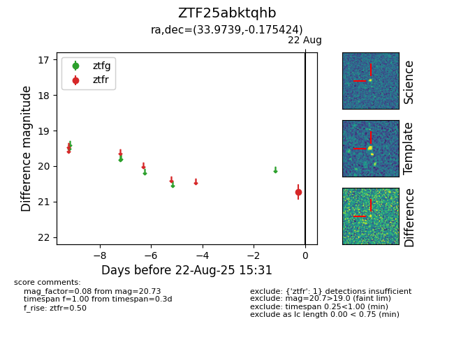

Target ZTF25abktqhb at 2025-08-22 15:31, see:
FINK: fink-portal.org/ZTF25abktqhb
Lasair: lasair-ztf.lsst.ac.uk/objects/ZTF25abktqhb
ALeRCE: alerce.online/object/ZTF25abktqhb
alt names
ZTF25abktqhb (ztf,alerce)
coordinates:
equatorial (ra, dec) = (33.9739,-0.17542)
galactic (l, b) = (163.3738,-56.26643)
photometry
last ztfr=20.73
1 ztfr detections
